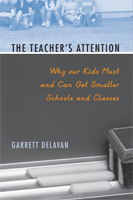

Reframing the goals of school reform
Reframing the goals of school reform


 Reframing the goals of school reform
Reframing the goals of school reform

|  |
The Teacher's AttentionWhy Our Kids Must and Can Get Smaller Schools and ClassesGarrett Delavanpaper EAN: 978-1-59213-894-4 (ISBN: 1-59213-894-2) |
"Delavan makes his case well and he handles the overall issues on class size very well. This is a unique book. No one has brought together this large body of literature and work on class size. The references are solid, thorough, and impressive."
—Jerome Rabow, Professor Emeritus, University of California, Los Angeles, and Lecturer, California State University, Northridge
The Teacher�s Attention is a fresh take on relationships in schools. Looking beyond our obsession with raising test scores, this book recognizes that education is a key partner in raising children. Garrett Delavan contends that allowing students, educators and parents to navigate a smaller number of relationships—a concept he calls "relationship load"—provides many benefits, including a better chance at achieving equal access to a good education for all children.
Delavan shows how class size, school size, and longer-term student-teacher relationships are all equally critical components for educating our children ethically and successfully. After examining these proposed reforms in detail, Delavan also considers counterarguments and provides a detailed projection of costs and savings, putting to rest the assumption that smaller classes and smaller schools are necessarily more expensive. Finally, the book discusses possible steps toward implementation, showing how the author's proposed reforms are remarkably practical.
Excerpt available at www.temple.edu/tempress
"Delavan's text advocates smaller sized schools and classes. His proposal is based on both personal research and experience. He asks readers to rethink what kids really need....Delavan admits that his notions are idealistic, but that 'future adults' are worth the sacrifice. Recommended."
—Choice
"If ever there has been a book that makes the case for smaller class sizes, this is it. It looks not only at policy issues, costs, and political strategies, but also pushes educators and parents to think about our relationships with students. Delavan, a high school teacher in Salt Lake City, argues for 'relationship load' reduction as a key feature of improving education and the lives of children."
—Rethinking Schools Online
Introduction
1. First and Foremost
2. Getting the Crisis Right
3. The Racial Relationship Gap
4. Defiing the Harm: Adult Attention Deficit
5. The Four-Piece Relationship Load Solution
6. The Core of the Relationship Load Effect
7. The Counterarguments
8. The Costs and Savings
9. Implementation at the School and District Levels
10. Implementation at the State and Federal Levels
11. Help from the Private Sector
12. Implementation at Kid Level
Conclusion
Appendices
Notes
References
Index
 | Garrett Delavan is a secondary teacher in the Salt Lake City public schools. |
Education
Sociology
Psychology
© 2015 Temple University. All Rights Reserved. This page: http://www.temple.edu/tempress/titles/1986_reg.html.